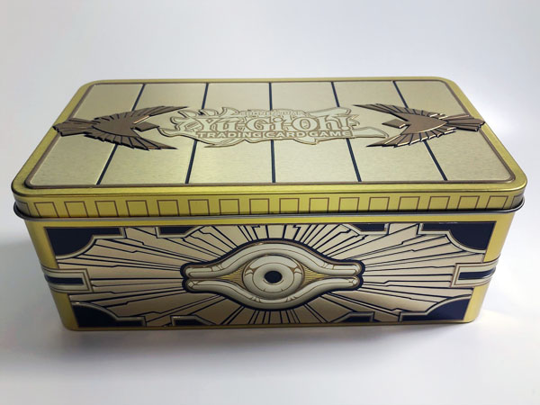

MIDORI CORPS
TRADING CARDS GAME
destacado del mes
caja de yu-gi-oh Gold Sarcophagus

La Lata Cofre de Oro Sellado 2019 es una lata coleccionable de Yu-Gi-Oh! Juego de Cartas Coleccionables.
Cada lata contiene:
Tres Mega Packs de 16 cartas. Cada Mega Pack contiene cartas de Llamas de la Destrucción, Salvadores Oscuros, Horizonte Cibernético y Fusión del Alma.
1 Rara Secreta Prismática
1 Ultra Rara
1 Súper Rara
1 Rara
12 Comunes
5 cartas variantes Raras Secretas Prismáticas:
2 de 6 cartas nuevas con ilustración dibujada por Kazuki Takahashi
2 de 5 cartas de la serie animada Yu-Gi-Oh!
1 de 3 cartas nuevas de estreno mundial
Unboxing de Gold Sarcophagus